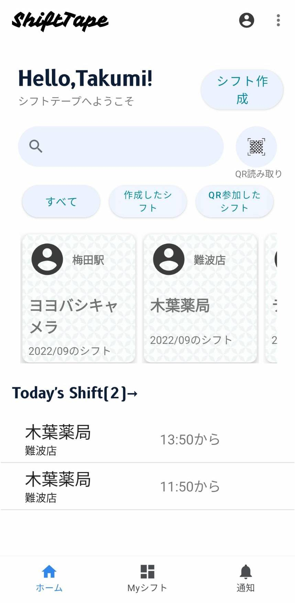

堂々たる兄弟ShiftTape

Android版
元祖ShiftTape。先行バージョンアップはこちらで行います。

iPhone版(β)
セカンドShiftTape。iPhoneの機能を活かしたShiftTapeを開発しています。現在開発中です。
簡単操作でShiftTapeはすぐにあなたと馬が合う。
利用される理由
01
オンラインで決められる
買い物中、大学、職場、どんなところでもシフトを決めることができます
02
レスポンスが早い
紙のシフト表のようにすぐに確認できて、すぐに入力できるような動作を追求しました。
03
セキュリティの重視
シフト表はプライベート。GoogleFirebaseでセキュリティを強固なものにしています。セキュリティルールも厳重に。
04
シフト決め"チョー楽"
シフトを決めるときにいつ、誰がシフトを入れているかをひと目で確認できるようにしたことでストレスが軽減されます
05
オーナーのための設定
シフト管理者が従業員の管理をしやすいように、シフトの細かい設定が可能です。
オーナー向け設定も充実
SHIFTTAPE ADMISSION POLICY
一緒に真剣にShiftTape時代を切り開く勇者募集中！
私自身大学生ですので、給料を払える余裕はありません。ですが、私と一緒に働くという一瞬はかけがえのないものになると信じています。 私と一緒に冒険してみませんか？ 現在理系文系問わずiPhone(開発方法は要相談)デベロッパーとWebデベロッパーとデザイナーの計三人の募集を予定しています。 特にアプリとウェブのデザインは大事なのでデザイナーは重宝します。先に申し上げておきますとここは給料は発生しません。サークルです。 給料が発生しないということはあなたは開発に対する責任が重くなくのびのびと開発することができます。（当然アプリをリリースして収入が入れば給料をお渡しします。） まず私はあなたのことを知りたいので以下のメールアドレスに名前とご希望の空いている日時と特技（なんでも）を本文に書いて送信してください。 後日返信でZoomの日程をご連絡いたします。Zoomの内容は簡単な自己紹介です。詳細は返信メールでお伝えいたします 。Takuchanの顔を見てみたいから応募してみました、でも大丈夫です。あっ、でも僕の顔をインターネットに公開したら即アウトだからね！質問はお気軽にメールでご連絡ください！
takuchanapp@gmail.com